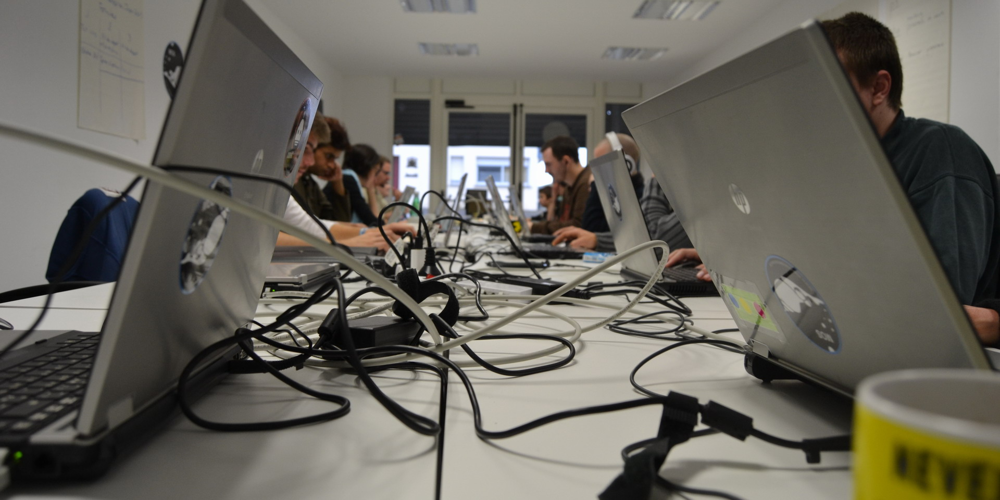

Inscription
La session du 21/09/2015-2016 est à présent rempli. Nous remercions tous ceux et celles qui ont porté de l'intérêt à la MOS. Rendez vous à la rentrée 2016-2017 pour la prochaine session !
Événements
Plusieurs événements sont programmés durant la formation, comme des Hakatons, des visites d'entreprises,etc. Des projets sont aussi à venir, nous travaillons avec des futurs entrepreneurs qui cherchent une aide pour la création de site.

F.A.Q
Que signifie MoS ?
Combien coûte la formation ?
Quels sont les horaires ?
La formation est-elle certifiée ?
Quels sont les pré-requis ?